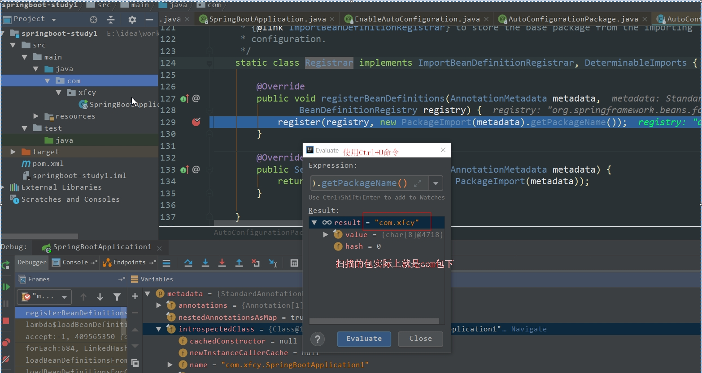

[TOC]
1. 前言
在创建完成SpringBoot应用后，我们通常在启动类中发现如下内容：
1 |
|
上面的注解@SpringBootApplication便是表明该类是一个启动类。我们不禁好奇，其内部是怎样的？
2. 分析
2.1 @SpringBootApplication注解
说到 Spring Boot 启动类就不得不介绍一下 @SpringBootApplication 注解了，这个注解的相关代码如下：
1 | (ElementType.TYPE) |
可以看出大概可以把 @SpringBootApplication看作是 @SpringBootConfiguration、@EnableAutoConfiguration、@ComponentScan注解的集合。根据 SpringBoot官网，这三个注解的作用分别是：
@EnableAutoConfiguration：启用 SpringBoot 的自动配置机制@ComponentScan： 扫描被@Component(@Service,@Controller)注解的bean，注解默认会扫描该类所在的包下所有的类。@SpringBootConfiguration：标注在某个类上，表示这是一个Spring Boot的配置类；
所以说 @SpringBootApplication就是几个重要的注解的组合，为什么要有它？当然是为了省事，避免了我们每次开发 Spring Boot 项目都要写一些必备的注解。这一点在我们平时开发中也经常用到，比如我们通常会提一个测试基类，这个基类包含了我们写测试所需要的一些基本的注解和一些依赖。下面将对上面三个注解分析。
允许在上下文中注册额外的bean或导入其他配置类。
2.2 @SpringBootConfiguration注解
我们可以看看其源码。
1 | (ElementType.TYPE) |
可以发现其实际上就是一个@Configuration注解。在Spring中我们知道标注这个注解的该类表示其是一个注解类。配置类也是容器（@Componnet）的一个组件，还有其他组件如下：
@Service用于标注业务层组件@Controller用于标注控制层组件（如struts中的action）@Repository用于标注数据访问组件，即DAO组件@Component泛指组件，当组件不好归类的时候，我们可以使用这个注解进行标注。
但是需要注意的是，在使用@Componnet和@Configuration使用上存在差别
@Component和@Configuration作为配置类的差别
总结起来就是：@Configuration是随容器启动开始加载的,始终存在的单例模式。 @Component是使用一次即实例化一次
2.3 @EnableAutoConfiguration注解
同样我们看看其源码：
1 | (ElementType.TYPE) |
功能：开启自动配置功能。以前我们需要配置的东西，默认是自动配置其默认的全部类（后面有分析），Spring Boot帮我们自动配置。
@AutoConfigurationPackage：自动导包1
2
3
4
5
6
7
8(ElementType.TYPE)
(RetentionPolicy.RUNTIME)
(AutoConfigurationPackages.Registrar.class)
public @interface AutoConfigurationPackage {
}内部还是通过
@Import注解，该注解的作用是给容器导入一个组件。@Import(AutoConfigurationPackages.Registrar.class)，它就是将Registrar这个组件类导入到容器中，可查看Registrar类中registerBeanDefinitions方法，这个方法就是导入组件类的具体实现。1
2
3
4
5
public void registerBeanDefinitions(AnnotationMetadata metadata, BeanDefinitionRegistry registry) {
//将注解标注的元信息传入，获取到相应的包名
register(registry, new PackageImport(metadata).getPackageName());
}在上面这一行设置一个断点，利用debug运行。

可以发现，扫描的包就是
com.xfcy下的全部内容。AutoConfigurationImportSelector：导入哪些组件的选择器；将所有需要导入的组件以全类名的方式返回；这些组件就会被添加到容器中；会给容器中导入非常多的自动配置类（xxxAutoConfiguration）；就是给容器中导入这个场景需要的所有组件，并配置好这些组件；不妨看一下该类的源码
1
2
3
4
5
6
7
8
9
10
11
12
13
14
15
16
17public class AutoConfigurationImportSelector
implements DeferredImportSelector, BeanClassLoaderAware, ResourceLoaderAware,
BeanFactoryAware, EnvironmentAware, Ordered {
//....
public String[] selectImports(AnnotationMetadata annotationMetadata) {
//...
// 加载自动装配的元信息
AutoConfigurationMetadata autoConfigurationMetadata = AutoConfigurationMetadataLoader
.loadMetadata(this.beanClassLoader);
// 该方法返回的就是自动装配的组件,进入该方法
AutoConfigurationEntry autoConfigurationEntry = getAutoConfigurationEntry(
autoConfigurationMetadata, annotationMetadata);
return StringUtils.toStringArray(autoConfigurationEntry.getConfigurations());
}查看
getAutoConfigurationEntry方法的源码。1
2
3
4
5
6
7
8
9
10
11
12
13
14
15
16
17
18
19
20
21
22
23
24
25
26protected AutoConfigurationEntry getAutoConfigurationEntry(
AutoConfigurationMetadata autoConfigurationMetadata,
AnnotationMetadata annotationMetadata) {
if (!isEnabled(annotationMetadata)) {
return EMPTY_ENTRY;
}
// 获取 @EnableAutoConfigoration 标注类的元信息，也就是获取该注解 exclude 和 excludeName 属性值
AnnotationAttributes attributes = getAttributes(annotationMetadata);
// 该方法就是获取自动装配的类名集合
List<String> configurations = getCandidateConfigurations(annotationMetadata,
attributes);
// 去除重复的自动装配组件，就是将List转为Set进行去重
configurations = removeDuplicates(configurations);
// 这部分就是根据上面获取的 exclude 及 excludeName 属性值，排除指定的类
Set<String> exclusions = getExclusions(annotationMetadata, attributes);
checkExcludedClasses(configurations, exclusions);
configurations.removeAll(exclusions);
// 这里是过滤那些依赖不满足的自动装配 Class
configurations = filter(configurations, autoConfigurationMetadata);
fireAutoConfigurationImportEvents(configurations, exclusions);
// 返回的就是经过一系列去重、排除、过滤等操作后的自动装配组件
return new AutoConfigurationEntry(configurations, exclusions);
}其中对于
getCandidateConfigurations方法的源码如下：1
2
3
4
5
6
7
8
9protected List<String> getCandidateConfigurations(AnnotationMetadata metadata,
AnnotationAttributes attributes) {
List<String> configurations = SpringFactoriesLoader.loadFactoryNames(
getSpringFactoriesLoaderFactoryClass(), getBeanClassLoader());
Assert.notEmpty(configurations,
"No auto configuration classes found in META-INF/spring.factories. If you "
+ "are using a custom packaging, make sure that file is correct.");
return configurations;
}其中
getSpringFactoriesLoaderFactoryClass()返回的是EnableAutoConfiguration.class。继续往下，执行的是
SpringFactoriesLoader#loadFactoryNames方法1
2
3
4
5
6
7
8
9
10
11
12
13
14
15
16
17
18
19
20
21
22
23
24
25
26
27
28
29
30
31
32
33
34
35
36
37
38
39
40
41
42
43
44
45public final class SpringFactoriesLoader {
...
public static final String FACTORIES_RESOURCE_LOCATION = "META-INF/spring.factories";
public static List<String> loadFactoryNames(Class<?> factoryClass, @Nullable ClassLoader classLoader) {
// 前面可以看到，这里的 factoryClass 是 EnableAutoConfiguration.class
String factoryClassName = factoryClass.getName();
return loadSpringFactories(classLoader).getOrDefault(factoryClassName, Collections.emptyList());
}
private static Map<String, List<String>> loadSpringFactories( ClassLoader classLoader) {
MultiValueMap<String, String> result = cache.get(classLoader);
if (result != null) {
return result;
}
try {
Enumeration<URL> urls = (classLoader != null ?
classLoader.getResources(FACTORIES_RESOURCE_LOCATION) :
ClassLoader.getSystemResources(FACTORIES_RESOURCE_LOCATION));
result = new LinkedMultiValueMap<>();
while (urls.hasMoreElements()) {
URL url = urls.nextElement();
UrlResource resource = new UrlResource(url);
Properties properties = PropertiesLoaderUtils.loadProperties(resource);
for (Map.Entry<?, ?> entry : properties.entrySet()) {
String factoryClassName = ((String) entry.getKey()).trim();
for (String factoryName : StringUtils.commaDelimitedListToStringArray((String) entry.getValue())) {
result.add(factoryClassName, factoryName.trim());
}
}
}
cache.put(classLoader, result);
return result;
}
catch (IOException ex) {
throw new IllegalArgumentException("Unable to load factories from location [" +
FACTORIES_RESOURCE_LOCATION + "]", ex);
}
}
...
}最终的实现逻辑都在这里，主要过程如下：
（1）搜索classpath路径下以及所有外部jar包下的META-INF文件夹中的
spring.factories文件。主要是spring-boot-autoconfigur包下的1
2
3
4
5
6
7
8
9
10
11
12
13
14# Initializers
org.springframework.context.ApplicationContextInitializer=\
org.springframework.boot.autoconfigure.SharedMetadataReaderFactoryContextInitializer,\
org.springframework.boot.autoconfigure.logging.ConditionEvaluationReportLoggingListener
# Application Listeners
org.springframework.context.ApplicationListener=\
org.springframework.boot.autoconfigure.BackgroundPreinitializer
# Auto Configuration Import Listeners
org.springframework.boot.autoconfigure.AutoConfigurationImportListener=\
org.springframework.boot.autoconfigure.condition.ConditionEvaluationReportAutoConfigurationImportListener
//....可以看到其中内容，存储的是key-value格式的数据，且key是一个类的全路径名称，value是多个类的全路径名称，且以逗号分割。
（2）将所有的
spring.factories文件转成Properties格式，将里面key-value格式的数据转成Map，该Map的value是一个List，之后将相同Key的value合并到List中，将该Map作为方法返回值返回。（3）返回到
loadFactoryNames方法，通过上面得知factoryClassName的值为EnableAutoConfiguration，所以通过getOrDefault(factoryClassName, Collections.emptyList())方法，获取 key 为EnableAutoConfiguration的类名集合。ps：
getOrDefault第一个入参是key的name，如果key不存在，则直接返回第二个参数值至此，流程结束，最后返回的就是自动装配的组件，其中有我们比较熟悉的Redis、JDBC、SpringMVC等，可以看到一个特点，这些自动装配的组件都是以
AutoConfiguration结尾。但该组件列表只是候选组件，因为后面还有去重、排除、过滤等一系列操作，这里就不再详细述说。下面我们来看看自动装配的组件内部是怎么样的。
2.4 自动装配的内部实现
就拿比较熟悉的 Web MVC 来看，看看是如何实现 Web MVC 自动装配的。先来代码组成部分：
1 |
|
- 注解部分：
@Configuration：这个大家都比较熟悉，标识该类是一个配置类@ConditionalXXX：这是上篇文章所讲的 Spring 条件装配，只不过经由 Spring Boot 扩展形成了自己的条件化自动装配，且都是@Conditional的派生注解。@ConditionalOnWebApplication：参数值是 Type 类型的枚举，当前项目类型是任意、Web、Reactive其中之一则实例化该 Bean。这里指定如果为 Web 项目才满足条件。@ConditionalOnClass：参数是 Class 数组，当给定的类名在类路径上存在，则实例化当前Bean。这里当Servlet.class、DispatcherServlet.class、WebMvcConfigurer.class存在才满足条件。@ConditionalOnMissingBean：参数是也是 Class 数组，当给定的类没有实例化时，则实例化当前Bean。这里指定当WebMvcConfigurationSupport该类没有实例化时，才满足条件。
- 装配顺序
@AutoConfigureOrder：参数是int类型的数值，数越小越先初始化。@AutoConfigureAfter：参数是 Class 数组，在指定的配置类初始化后再加载。@AutoConfigureBefore：参数同样是 Class 数组，在指定的配置类初始化前加载。
- 代码部分：
- 这部分就比较直接了，实例化了和 Web MVC 相关的Bean，如
HandlerAdapter、HandlerMapping、ViewResolver等。其中，出现了DelegatingWebMvcConfiguration类，这是上篇文章所讲的@EnableWebMvc所@Import导入的配置类。
- 这部分就比较直接了，实例化了和 Web MVC 相关的Bean，如
可以看到，在Spring Boot 自动装配的类中，经过了一系列的 @Conditional 条件判断，然后实例化某个模块需要的Bean，且无需我们配置任何东西，当然，这都是默认实现，当这些不满足我们的要求时，我们还得手动操作。